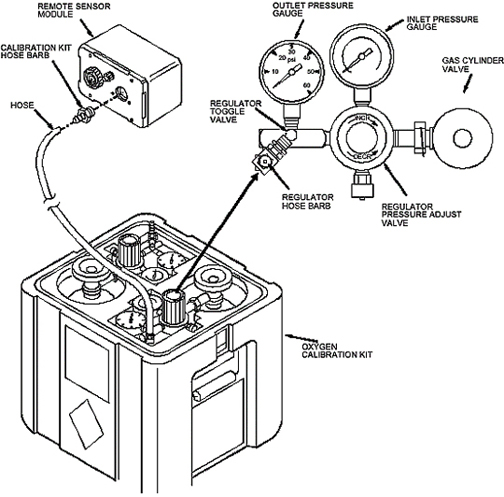

Using the newer Oxygen Monitor Calibration Kit 2173689:
Screw the hose barb from the calibration kit onto the front cover of the Remote Sensor Module. (See Illustration 26.)
Illustration 26: Oxygen Calibration Kit

Connect one end of the hose from the calibration kit to the 20.9% regulator hose barb. (Leave the other end of the hose unattached at this time, so that the hose can be purged when the gas is turned on.)
With the 20.9% regulator pressure adjust valve closed, open the 20.9% gas cylinder valve. The inlet pressure gauge will show the cylinder pressure.
| NOTE: | Adjust the valves slowly and only use low pressure. Adjusting the valves too fast or adjusting to excessive pressures may damage the sensor cell. |
Open the 20.9% regulator toggle valve, and slowly adjust the regulator pressure adjust valve for an outlet pressure of one or two PSIG as indicated on the outlet pressure gauge.
Connect the other end of the hose to the hose barb on the Remote Sensor Module.